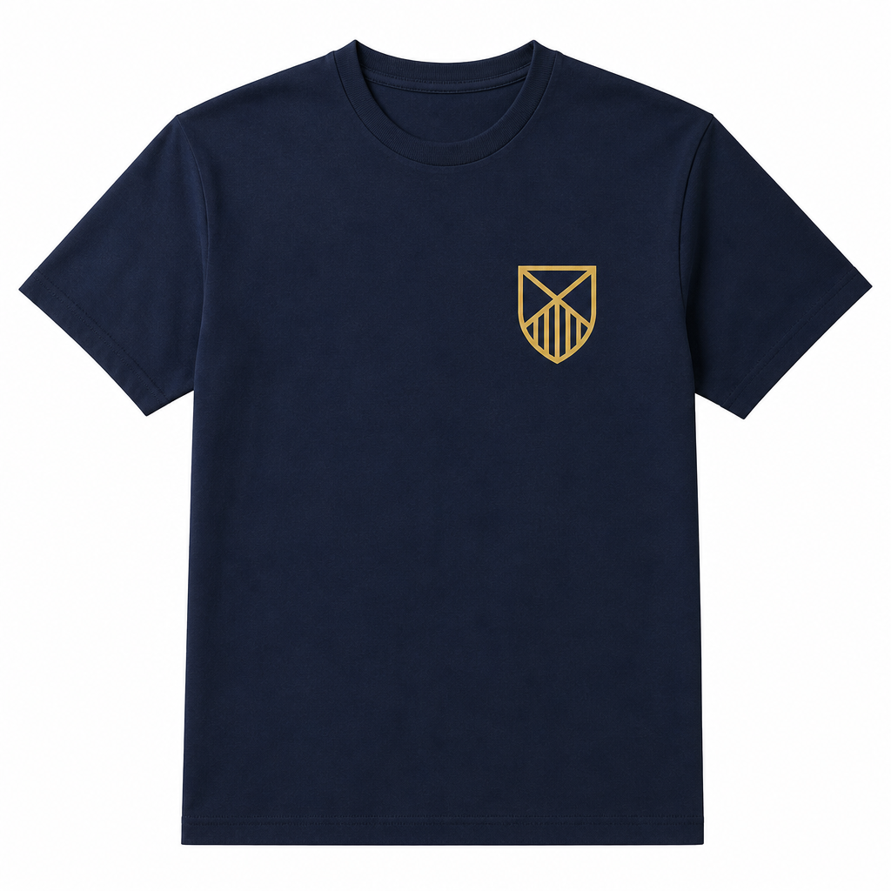
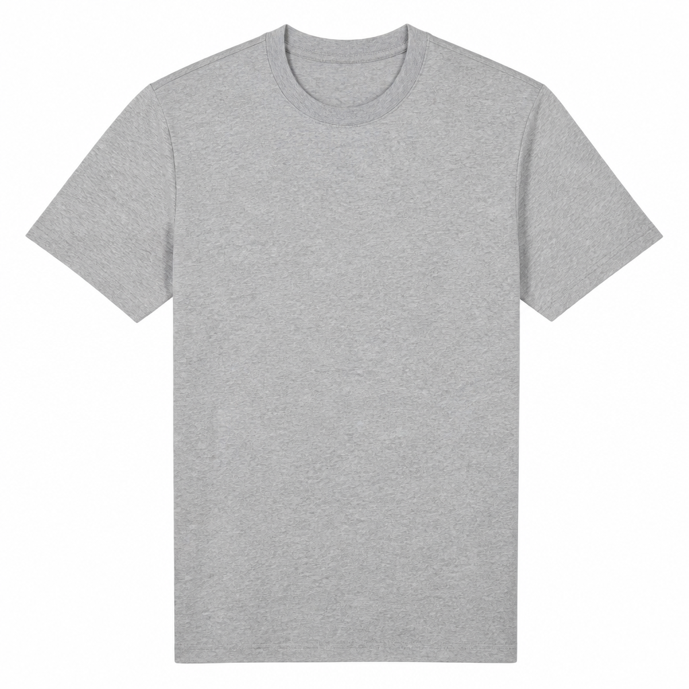

Lecture 5: Image Analysis
Timed lab (40 min).
0–6 scaffold + two toy photos ·
6–14 one vision caption ·
14–24 JSON schema ·
24–32 plain tee / no invented logos ·
32–38 two calls in parallel ·
38–40 log prompts.
If the API is slow, finish the schema on one image and stub the second — honesty beats a fake crest.
In-class goal: Turn two toy product photos into JSON captions a search index could use:
visual_description, search_tags, logo_or_text_cues. This is the Homework 3 Problem 2 shape — not the assignment. Do not unzip the Campus Customs pack.
Toy SKUs (not HW3): copy these two class images into
lec05/products/. They are fake catalog shots, not Yale Bulldog Blue inventory.

toy-crest-tee.png — navy tee, gold crest. SKU TOY-CREST.
toy-plain-tee.png — plain heather tee. SKU TOY-PLAIN. No logo.Step 1 Scaffold + two photos 0–6 min
You need files, a schema prompt, and images on disk. Do not type a description from memory.
Create lec05/ with products/, prompts/, output/. Copy toy-crest-tee.png and toy-plain-tee.png from the lecture images folder into lec05/products/. Write toy_skus.json with exactly 2 products: sku, name, price_usd, image. TOY-CREST = navy crest tee, $24, products/toy-crest-tee.png TOY-PLAIN = heather gray blank tee, $22, products/toy-plain-tee.png Write prompts/describe_product.md (you will fill the rules in Step 3). README: this is a class toy, not the HW3 pack. .env.example with OPENAI_API_KEY=. Do not write a real key.
Check: Both pngs open on disk. JSON has 2 rows. No Homework 3 zip in the folder.
Step 2 One image → a caption 6–14 min
First prove the model can see. A paragraph is enough. Then we freeze the fields.
Create caption_one.py that sends products/toy-crest-tee.png to a vision-capable model (prefer gpt-5.6-luna). Prompt: "Describe this garment in 3 sentences. Color, type, any logo or text you can actually read. If you cannot read text, say so." Print the caption and write output/crest_caption.txt. Load OPENAI_API_KEY from .env. detail=low is fine for this first call.
Check: The caption mentions a navy/blue tee and a crest/shield. It does not mention Bitcoin, Yale wordmarks, or Handsome Dan unless those marks are truly in the pixels (they are not).
Step 3 Same image, now JSON 14–24 min
Homework 3 will grade fields, not vibes. Practice the contract on a toy SKU.
Fill prompts/describe_product.md: - Look at the image. Do not invent logos, words, mascots, or colors. - Return JSON only: visual_description (short paragraph), search_tags (array of short strings), logo_or_text_cues (array of readable marks; empty if none). Write describe_one.py: read toy_skus.json, find TOY-CREST, call vision with that prompt + the image, merge inventory fields + vision fields, write output/one_product.json. If a field is not visible, use [] or say so in the description — never guess a university name.
Check:
one_product.json parses. Has sku TOY-CREST plus the three vision keys. logo_or_text_cues does not contain words that are not on the shirt.Step 4 The trap photo: invent nothing 24–32 min
The plain tee is the eval. Helpful models love to “complete” a merch shop.
Run the same describe prompt on products/toy-plain-tee.png. Save output/plain_product.json with sku TOY-PLAIN. logo_or_text_cues MUST be [] (or empty) unless you can photograph actual print — this shirt has none. search_tags may include color and "plain" / "blank" / "no logo". Do not add a crest, bulldog, or wordmark.
Check: Open the png yourself. If the JSON names a logo, the run fails. Fix the prompt, do not edit the JSON by hand to hide it.
Step 5 Two images in parallel 32–38 min
Homework 3 Problem 2 forbids a sequential wait-for-each-image loop. Practice the idea on two files.
Create describe_two.py that vision-calls BOTH toy images concurrently (threads, asyncio, or equivalent) with max 2 workers.
Write output/toy_catalog.json as { "products": [ ... ] } merging toy_skus.json fields + vision fields.
If one call fails, retry that SKU once. Print elapsed seconds vs a comment of "would have been ~2× sequentially."
Do not process the HW3 20-SKU pack.
Check: Two products in one JSON. Wall-clock is not “caption 1, then wait, then caption 2” in a blocking for-loop. Plain tee still has empty logo cues.
Step 6 AI_prompts.md 38–40 min
Same habit as every homework: log what you asked, in your words.
Append a Lecture 5 section to AI_prompts.md: the caption prompt, the JSON schema prompt, and one sentence on whether the model invented a mark on the plain tee. Stretch: print estimated image tokens for one 1024×1024 photo using ceil(W/32)*ceil(H/32) and a Luna $ line.
Check:
AI_prompts.md has a Lecture 5 heading and at least one prompt in your own words.Stretch: Set detail=low vs original on the crest tee and compare whether tiny crest edges survive. Do not start Homework 3.